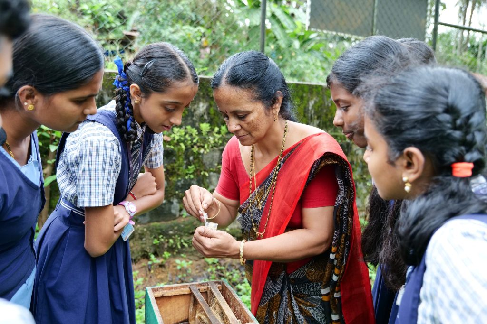
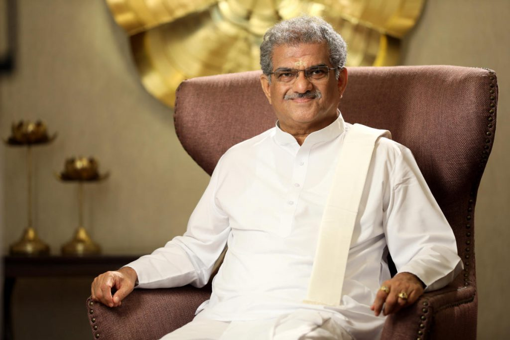

SDM Secondary School
Strong values.
Extraordinary possibilities.
Get to know the people, purpose and principles behind our school.
Welcome to SDM
Strong roots.
Open horizons.
School is where a child begins to see what they can become.
At SDM Secondary School, Ujire, academic learning sits alongside cultural understanding, practical experience and care for others. It is an education that makes room for both achievement and character.
From the classroom to the playground, students have opportunities to ask questions, discover their interests and grow with their community.
Our story
Some of the best lessons
happen beyond a classroom.
Our foundations
Established in 2006
A school built around learning, character and community.
State Board
Affiliated to the State Board in 2008.
Part of SDME Society
Guided by the principle of adding value into education.

Our guiding vision
Education that
builds character.
The school’s journey is shaped by the guidance of Dr. D. Veerendra Heggade and a commitment to education that serves society.
Dr. D. Veerendra Heggade
President · SDM Educational SocietyA shared commitment
Growing together.
Learning for life.
Education is a partnership between students, teachers and families.
The school combines academic study with arts, sport, cultural activities and practical experiences. Students are encouraged to build confidence, take responsibility and contribute to their community.
Clubs provide opportunities to explore science, reading, the environment and public service. Cubs, Bulbuls, Scouts and Guides bring teamwork and service into school life.
Meet our teachersLet’s take the next step